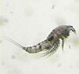

harpacticoida

Definition: Harpacticoida is an order of copepods, in the subphylum Crustacea. This order comprises 463 genera and about 3,000 species; its members are benthic copepods found throughout the world in the marine environment (most families) and in fresh water (essentially the Ameiridae, Parastenocarididae and the Canthocamptidae). A few of them are planktonic or live in association with other organisms. Harpacticoida represents the second-largest meiofaunal group in marine sediments, after nematodes. In Arctic and Antarctic seas, Harpacticoida are common inhabitants of sea ice. The name Harpacticoida comes from the Greek noun harpacticon (rapacious predator) and the suffix -oid (akin to) and means reminiscent of a predator .
Source: Wikipedia
Wikipedia Page (Something wrong with this association? Let us know.)
Wikidata Page (Something wrong with this association? Let us know.)